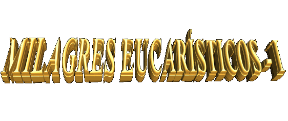

 VERDADE CRISTÃ - O Novo Testamento ensina que DEUS se fez Homem e veio habitar entre
nós,
VERDADE CRISTÃ - O Novo Testamento ensina que DEUS se fez Homem e veio habitar entre
nós, encarnando-se em JESUS CRISTO, Segunda Pessoa da SANTÍSSIMA
TRINDADE. Em nosso meio ELE cumpriu uma preciosa Missão de Amor, redimindo
a humanidade perante o PAI ETERNO e deixando meios eficazes para sermos felizes
aqui na Terra e alcançarmos a salvação eterna no Céu. JESUS está presente nos
Sacramentos e no Sacerdócio Eclesial, da mesma forma que está presente pela graça,
em cada criatura que O segue. Escondido aos olhos do mundo, CRISTO verdadeiro
DEUS e verdadeiro Homem, está presente no Sacramento da Eucaristia, em Corpo,
Sangue, Alma e Divindade. A simples partícula consagrada, oculta misteriosamente
sua divindade, glória e poder. Por isso mesmo, ELE quer que nos aproximemos DELE
por amor, sem qualquer interesse ou em busca de um benefício. ELE nos quer
modestamente pobres em espírito e puros em intenções, sinceramente
arrependidos de todas as culpas pelo Sacramento da Confissão, sobretudo
conscientes de que na Sagrada Comunhão ELE está Realmente Presente
e SI dá integralmente na menor porção da Eucaristia, DEUS Vivo
e Verdadeiro, Sacramento de Vida e Amor.
encarnando-se em JESUS CRISTO, Segunda Pessoa da SANTÍSSIMA
TRINDADE. Em nosso meio ELE cumpriu uma preciosa Missão de Amor, redimindo
a humanidade perante o PAI ETERNO e deixando meios eficazes para sermos felizes
aqui na Terra e alcançarmos a salvação eterna no Céu. JESUS está presente nos
Sacramentos e no Sacerdócio Eclesial, da mesma forma que está presente pela graça,
em cada criatura que O segue. Escondido aos olhos do mundo, CRISTO verdadeiro
DEUS e verdadeiro Homem, está presente no Sacramento da Eucaristia, em Corpo,
Sangue, Alma e Divindade. A simples partícula consagrada, oculta misteriosamente
sua divindade, glória e poder. Por isso mesmo, ELE quer que nos aproximemos DELE
por amor, sem qualquer interesse ou em busca de um benefício. ELE nos quer
modestamente pobres em espírito e puros em intenções, sinceramente
arrependidos de todas as culpas pelo Sacramento da Confissão, sobretudo
conscientes de que na Sagrada Comunhão ELE está Realmente Presente
e SI dá integralmente na menor porção da Eucaristia, DEUS Vivo
e Verdadeiro, Sacramento de Vida e Amor.
OS DESCRENTES - Infelizmente há muitas pessoas que não crêem, não aceitam e não tem
o menor respeito por esta verdade, interpretando a expressão "banquete eucarístico" ao pé da letra, ou seja,
como se fosse apenas uma refeição, lembrança da última Ceia que o SENHOR fez com
os Apóstolos em Jerusalém. Dessa forma, eles consideram a Sagrada Comunhão como
um simples "símbolo" de JESUS e não como a Sua Presença Real e Verdadeira. Não acreditando,
embora sendo criaturas como nós, filhos do Mesmo CRIADOR, fazem a sua própria escolha,
e, por conseguinte, estão sujeitos as consequências desastrosas de uma opção
errada e infeliz.
DEUS Todo-Poderoso derrama sem interrupções,
independentemente de qualquer merecimento da humanidade, um imenso manancial de
graças sobre as pessoas de todas as gerações. Na sua infinita bondade de PAI não
faz distinções e nem discriminações entre os bons e os maus, suas graças são
para todos. As criaturas com sua liberdade de escolha, é que vão captar e
acolher ou não, os "bens
Divinos" que nos são proporcionados. Poderíamos
comparar dizendo que, a vontade das pessoas para a recepção das graças,
funciona como se fosse uma válvula: existem aqueles que abrem o
coração para recebê-las e os que se mantém fechados aos incontáveis
benefícios de DEUS. Também entre os que se abrem, há neles um variado grau de
intensidade amorosa na solicitação e recepção das graças. Existem aqueles que se
abrem mais, são disponíveis, são receptivos, fervorosos, sinceros e fieis,
procuram ser mais competentes e caprichosos, mas há também aqueles que se abrem
menos, não são tão pontuais, não possuem uma sólida perseverança, são secos,
impacientes no tratamento com as coisas sagradas e pouco disponíveis no
relacionamento com NOSSO SENHOR.
no
relacionamento com NOSSO SENHOR.
O Amor de DEUS é igual
para todos os seres humanos, nós é que o acolhemos em diferentes grandezas, em
virtude da desigual maneira que cada pessoa se apresenta para
recebê-lo.
PROVA
DEFINITIVA - O CRIADOR quis provar ao mundo através
de Júlia Kim, que a Eucaristia é o fundamento da união dos cristãos entre si e com DEUS.
Porque ela é o próprio DEUS. O PAI ETERNO por meio da Vidente demonstra de maneira
viva e inquestionável, que na Santa Missa, acontece verdadeiramente o fenômeno da
"Transubstanciação”, ou seja, as espécies de pão e vinho são transformadas pelo ESPÍRITO SANTO
em Corpo, Sangue, Alma e Divindade do SENHOR, permanecendo contudo, a aparência
das mesmas espécies de pão e vinho. E de modo maravilhoso, para
provar esta Verdade, o CRIADOR providenciou notáveis Milagres Eucarísticos.
Em Naju, durante a Santa Missa, em várias oportunidades, no momento da
Comunhão, a Hóstia Consagrada colocada sobre a língua da vidente
Julia Kim, se transforma de modo visível e impressionante na Carne
e no Sangue do SENHOR, deixando perplexas e repletas de admiração pessoas
do mundo inteiro. Leigos e autoridades religiosas que presenciaram o fenômeno,
ficaram enlevadas e extasiadas diante da grandeza do evento e do extraordinário
e sobrenatural empenho Divino para provar a Presença Real de JESUS CRISTO na
SAGRADA EUCARISTIA.
 FREQUÊNCIA DA MANIFESTAÇÃO
- Os Milagres Eucarísticos repetiram-se por mais de 20 vezes,
em locais diferentes, até no Vaticano, sempre causando espanto e emoção, pela
grandeza e absoluta clareza com que ocorrem. Além destes milagres, outras
manifestações sobrenaturais tem acontecido por meio de Júlia Kim, sempre
colocando em evidência a Partícula Sagrada da Comunhão. É assim, que a vidente
recolhendo água numa Fonte abençoada pelo SENHOR, próxima a Capela, no fundo
do recipiente apareceu por mais de uma vez a imagem de uma Hóstia. Sobre o telhado
da Capela, foi visto também em diversas oportunidades, projetada pela luz do
sol, a imagem de um Cálice e de uma Hóstia. Inclusive existem fotografias e
filmes sobre estes fenômenos.
FREQUÊNCIA DA MANIFESTAÇÃO
- Os Milagres Eucarísticos repetiram-se por mais de 20 vezes,
em locais diferentes, até no Vaticano, sempre causando espanto e emoção, pela
grandeza e absoluta clareza com que ocorrem. Além destes milagres, outras
manifestações sobrenaturais tem acontecido por meio de Júlia Kim, sempre
colocando em evidência a Partícula Sagrada da Comunhão. É assim, que a vidente
recolhendo água numa Fonte abençoada pelo SENHOR, próxima a Capela, no fundo
do recipiente apareceu por mais de uma vez a imagem de uma Hóstia. Sobre o telhado
da Capela, foi visto também em diversas oportunidades, projetada pela luz do
sol, a imagem de um Cálice e de uma Hóstia. Inclusive existem fotografias e
filmes sobre estes fenômenos.
Por isso mesmo, com a intenção de
testemunhar os fenômenos Eucarísticos acontecidos em Naju, a seguir daremos
detalhes dos acontecimentos, descrevendo alguns deles.
SÉTIMO MILAGRE
- Aconteceu numa circunstância tal, que a Igreja Católica no mundo
inteiro tomou conhecimento do fato. Estava presente o Núncio Apostólico da Santa
Sé. O Arcebispo do Vaticano informou ao Diretor espiritual da vidente Frei
Raymond Spies e as demais autoridades presentes, que não estava ali na Capela
como um simples peregrino, mas que veio como um representante oficial, na
celebração eucarística do dia 24 de Novembro de 1994, comemorativa do 2º
Aniversário do derramamento de óleo perfumado pela imagem de NOSSA
SENHORA.
Na presença do Núncio Apostólico, todos
rezavam enquanto nossa MÃE SANTÍSSIMA apareceu e instruia  Júlia, como prelúdio do admirável milagre que ia acontecer. Primeiro NOSSA
SENHORA pediu-lhe que recebesse a benção do Arcebispo e de Frei Spies. Depois
Ela introduziu o Arcanjo São Miguel que entregou uma Hóstia Consagrada à Júlia,
a fim de que ela a conduzisse aos dois prelados. A Hóstia que o Arcanjo trouxe
era do tamanho grande, semelhante àquelas que os sacerdotes utilizam nas
celebrações das Santas Missas. São Miguel não era visível às pessoas na Capela,
somente era visto pela vidente que acompanhava todos os seus movimentos.
Entretanto, as pessoas puderam ver a Sagrada Partícula aparecer de repente entre
os dedos de Júlia. Na Hóstia estava a imagem de uma Cruz entre duas letras: "A”
(de Alfa) e "W" (de Ômega), da mesma maneira como apareceu numa
fotografia de outro milagre proporcionado por NOSSA SENHORA em 27 de Junho
de 1993. No caso atual a Hóstia já estava quebrada em duas partes, quando Julia
a recebeu, por essa razão ficou com uma metade na mão direita e a outra, na mão
esquerda. De súbito, ela caiu ao chão pela força de uma poderosa luz vinda de cima.
Contudo, não soltou as Partículas, manteve os dois pedaços da Hóstia Consagrada
nas mãos. A seguir, cuidadosamente levantou-se e deu uma metade ao Núncio
Apostólico e a outra, a Frei Spies. Os prelados comungaram com um dos pedaços e
o outro, foi repartido em pequenas porções, a fim de ceder Comunhão às pessoas
que estavam perplexas, em completo assombro e temor, em face da grandeza daquele
acontecimento. E muito embora fosse apenas à metade de uma Hóstia grande, todas
as pessoas na Capela, aproximadamente 70, receberam a Comunhão. Admirados,
muitos testemunharam que simplesmente era uma experiência que desafiava a
compreensão humana, mas que fazia lembrar a passagem evangélica da multiplicação
dos pães. (Mt 14,13-21). No momento em que Júlia recebeu o pequeno pedaço da
Hóstia Consagrada sobre a língua, surpreendentemente a Partícula cresceu e
atingiu o tamanho de uma Hóstia pequena perfeitamente normal. O Núncio
Apostólico observando o fenômeno, respeitosamente retirou-a e mostrou ao povo.
Junto com Frei Spies a colocou numa Teca, guardando-a cuidadosamente como
testemunho daquela singular manifestação sobrenatural. Esta Hóstia está no
Ostensório menor, fotografia abaixo.
Júlia, como prelúdio do admirável milagre que ia acontecer. Primeiro NOSSA
SENHORA pediu-lhe que recebesse a benção do Arcebispo e de Frei Spies. Depois
Ela introduziu o Arcanjo São Miguel que entregou uma Hóstia Consagrada à Júlia,
a fim de que ela a conduzisse aos dois prelados. A Hóstia que o Arcanjo trouxe
era do tamanho grande, semelhante àquelas que os sacerdotes utilizam nas
celebrações das Santas Missas. São Miguel não era visível às pessoas na Capela,
somente era visto pela vidente que acompanhava todos os seus movimentos.
Entretanto, as pessoas puderam ver a Sagrada Partícula aparecer de repente entre
os dedos de Júlia. Na Hóstia estava a imagem de uma Cruz entre duas letras: "A”
(de Alfa) e "W" (de Ômega), da mesma maneira como apareceu numa
fotografia de outro milagre proporcionado por NOSSA SENHORA em 27 de Junho
de 1993. No caso atual a Hóstia já estava quebrada em duas partes, quando Julia
a recebeu, por essa razão ficou com uma metade na mão direita e a outra, na mão
esquerda. De súbito, ela caiu ao chão pela força de uma poderosa luz vinda de cima.
Contudo, não soltou as Partículas, manteve os dois pedaços da Hóstia Consagrada
nas mãos. A seguir, cuidadosamente levantou-se e deu uma metade ao Núncio
Apostólico e a outra, a Frei Spies. Os prelados comungaram com um dos pedaços e
o outro, foi repartido em pequenas porções, a fim de ceder Comunhão às pessoas
que estavam perplexas, em completo assombro e temor, em face da grandeza daquele
acontecimento. E muito embora fosse apenas à metade de uma Hóstia grande, todas
as pessoas na Capela, aproximadamente 70, receberam a Comunhão. Admirados,
muitos testemunharam que simplesmente era uma experiência que desafiava a
compreensão humana, mas que fazia lembrar a passagem evangélica da multiplicação
dos pães. (Mt 14,13-21). No momento em que Júlia recebeu o pequeno pedaço da
Hóstia Consagrada sobre a língua, surpreendentemente a Partícula cresceu e
atingiu o tamanho de uma Hóstia pequena perfeitamente normal. O Núncio
Apostólico observando o fenômeno, respeitosamente retirou-a e mostrou ao povo.
Junto com Frei Spies a colocou numa Teca, guardando-a cuidadosamente como
testemunho daquela singular manifestação sobrenatural. Esta Hóstia está no
Ostensório menor, fotografia abaixo.
Na continuidade, NOSSA SENHORA contou à
vidente, que aquela Hóstia Consagrada trazida pelo Arcanjo, era para ser
consumida por um padre, mas São Miguel não permitiu e a trouxe para a Capela,
porque o padre estava em "estado
de pecado" e JESUS não podia viver nele. Esta
realidade traz presente uma conclusão muito séria: na Santa Missa, quando as
pessoas em estado de pecado insistem em receber a Sagrada Comunhão, entrando
na fila, na verdade não recebem o SENHOR, mas comungam somente "trigo e água" e a
própria condenação.
Júlia desejava voltar para casa, a fim de
escrever as mensagens de NOSSA SENHORA e entregá-las ao senhor Arcebispo.
Contudo, ao sair da Capela, como caminhava com dificuldade por causa das
contínuas dores da crucificação que recebia em seu corpo, nossa MÃE SANTÍSSIMA
chamou-a novamente. Ela atendendo a solicitação, veio para junto da imagem da
VIRGEM MARIA e a pedido DELA, segurou nas mãos do Núncio e de Frei Spies num
gesto fraterno de penitencia. Depois NOSSA SENHORA perguntou-lhe se queria receber
a Sagrada Comunhão pela segunda vez. Desta vez o Arcanjo trouxe uma Hóstia menor,
igual àquelas que os fieis recebem nas Santas Missas e ministrou a comunhão à vidente.
Contudo, ao receber a Sagrada Hóstia em sua língua, normalmente na posição
horizontal, ao invés da Partícula permanecer deitada, assumiu a posição
vertical, sem que existisse algo para ampará-la. O Arcebispo vendo este outro
fenômeno, o inesperado surgimento de uma Partícula sobre a língua da Vidente em
posição vertical, em perfeito equilíbrio, retirou-a imediatamente e mostrou as
pessoas que não se arredavam da Capela. Mais fotografias foram feitas para
registrar o notável acontecimento. Em seguida, o Núncio entregou esta outra
Hóstia à Frei Spies que a colocou na mesma Teca onde estava a outra, levando-as
para a sua residência, enquanto o povo silenciosamente voltava a seus lares.
Esta Partícula também está no Ostensório menor, foto abaixo.
Arcebispo.
Contudo, ao sair da Capela, como caminhava com dificuldade por causa das
contínuas dores da crucificação que recebia em seu corpo, nossa MÃE SANTÍSSIMA
chamou-a novamente. Ela atendendo a solicitação, veio para junto da imagem da
VIRGEM MARIA e a pedido DELA, segurou nas mãos do Núncio e de Frei Spies num
gesto fraterno de penitencia. Depois NOSSA SENHORA perguntou-lhe se queria receber
a Sagrada Comunhão pela segunda vez. Desta vez o Arcanjo trouxe uma Hóstia menor,
igual àquelas que os fieis recebem nas Santas Missas e ministrou a comunhão à vidente.
Contudo, ao receber a Sagrada Hóstia em sua língua, normalmente na posição
horizontal, ao invés da Partícula permanecer deitada, assumiu a posição
vertical, sem que existisse algo para ampará-la. O Arcebispo vendo este outro
fenômeno, o inesperado surgimento de uma Partícula sobre a língua da Vidente em
posição vertical, em perfeito equilíbrio, retirou-a imediatamente e mostrou as
pessoas que não se arredavam da Capela. Mais fotografias foram feitas para
registrar o notável acontecimento. Em seguida, o Núncio entregou esta outra
Hóstia à Frei Spies que a colocou na mesma Teca onde estava a outra, levando-as
para a sua residência, enquanto o povo silenciosamente voltava a seus lares.
Esta Partícula também está no Ostensório menor, foto abaixo.
O Núncio Apostólico estava pasmo e
impressionado com todos aqueles acontecimentos. Na verdade ele ficou tão
emocionado, que não conseguiu dormir durante três noites seguidas, pensando e
recordando aqueles fatos extraordinários e sobrenaturais. Na sequência dos dias,
examinou com a maior atenção, todas aquelas ocorrências em Naju, desde o início
em 1985 até aquela data. Preparou um dossiê e nele registrou com detalhes, os
diversos fatos. A par com esta providência, o Arcebispo Victorinus Yoon da
Arquidiocese de Kwangju, que abrange a Paróquia de Naju, formou um comitê
para montar um processo de investigação, a fim de apurar e documentar os
acontecimentos, como parte inicial do processo canônico.


O Núncio
Apostólico examina a Hóstia retirada da boca de Júlia. -
Ostensório menor com as Hóstias.

Página
Anterior
 Próxima
Página
Próxima
Página
Retorna ao Índice